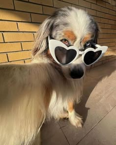

Všechna plemena jsou hodně přátelská, inteligentní a hodně závislá na svého páníčka. Jsou hodně chápavá a rychle se učí. Občas jsou hodně náladová a potřebujou hodne lasky a pěče. Ostatní psy mají v lasce takže jsou hodně společenský i k lidem a dětem.
